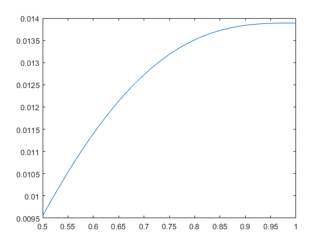

matlab工程分析第四次和第五次作业
习题5.1
% 5.1
clear all
clc
D_d = [6.00,3.00,2.00,1.50,1.20,1.10,1.07,1.05,1.03,1.01];
c = [0.88,0.89,0.91,0.94,0.97,0.95,0.98,0.98,0.98,0.92];
a = [0.33,0.31,0.29,0.26,0.22,0.24,0.21,0.20,0.18,0.17];
% c 和 a 的5阶多项式系数
c_fopxishu = polyfit(D_d,c,5);
a_fopxishu = polyfit(D_d,a,5);
c_fop = polyval(c_fopxishu, D_d);
a_fop = polyval(a_fopxishu, D_d);
% 5阶多项式近似
% c和a求得Kt
Kt_fop = func_5_1(D_d, c_fop, a_fop);
c_spline = spline(D_d, c, D_d);
a_spline = spline(D_d, a, D_d);
% spline 求得Kt
Kt_spline = func_5_1(D_d, c_spline, a_spline)
% 原始c,a代入得Kt
Kt_origin = func_5_1(D_d, c, a)
if sum((Kt_origin - Kt_fop).^2) > sum((Kt_origin - Kt_spline).^2)
disp('spline is better')
else
disp('fifth-order polynomial is better')
endKt_spline =
0.1473 0.3100 0.5449 0.9570 2.0532 4.1323 5.6109 7.4310 11.0332 22.2534
Kt_origin =
0.1473 0.3100 0.5449 0.9570 2.0532 4.1323 5.6109 7.4310 11.0332 22.2534
spline is better% func_5_1.m
function K_t = K_tFunction( D_d, a, c )
K_t = c.*(D_d/2-0.5).^(-a);
end习题5.2
% 5.2
%a
% with out hamming weighting function
Wn = [5, 9, 9.4, 20] * 2 * pi;
Zn = [0.1, 0.04, 0.04, 0.03];
Hn = [1, 1.3, 1.3, 1.8];
dt = 2*pi/(4*Wn(4));
N = 2^10;
T = dt * N;
ts = (0:N-1)*dt;
SampledSignal = 0;
for i=1:4
SampledSignal = SampledSignal + Hn(i)* exp((-Zn(i)*Wn(i)*ts)).*sin((1-Zn(i)^2)^0.5 *Wn(i)*ts);
end
df = (0:N/2-1)/T;
An = abs(fft(SampledSignal,N))/N;
plot(df,2*An(1:N/2))% with hamming weighting function
clear all
clc
Wn = [5, 9, 9.4, 20] * 2 * pi;
Zn = [0.1, 0.04, 0.04, 0.03];
Hn = [1, 1.3, 1.3, 1.8];
dt = 2*pi/(4*Wn(4));
N = 2^10;
T = dt * N;
ts = (0:N-1)*dt;
SampledSignal = 0;
for i=1:4
SampledSignal = SampledSignal + Hn(i)* exp((-Zn(i)*Wn(i)*ts)).*sin((1-Zn(i)^2)^0.5 *Wn(i)*ts);
end
df = (0:N/2-1)/T;
whamm = 0.54-0.46*cos(2*pi*ts/T);
k1 = sum(whamm.*SampledSignal)/sum(whamm);
k2 = sqrt(N/sum(whamm.^2));
CorrectedSignal = whamm.*(SampledSignal-k1)*k2;
An = abs(fft(CorrectedSignal,N))/N;
plot(df,2*An(1:N/2))
%b
% with out hamming weighting function
clear all
clc
Wn = [5, 9, 9.4, 20] * 2 * pi;
Zn = [0.1, 0.04, 0.04, 0.03];
Hn = [1, 1.3, 1.3, 1.8];
dt = 2*pi/(4*Wn(4));
N = 2^10;
T = dt * N;
ts = (0:N-1)*dt;
SampledSignal = 0;
for i=1:4
SampledSignal = SampledSignal + Hn(i)* exp((-Zn(i)*Wn(i)*ts)).*sin((1-Zn(i)^2)^0.5 *Wn(i)*ts);
end
df = (0:N/2-1)/T;
An = abs(fft(SampledSignal,N))/N;
Above_0 = find(diff(2*An(1:N/2))>0);
Above_0_1 = find(diff(Above_0)>1);
peaks_num = [Above_0(Above_0_1), Above_0(end)] + 1;
peaks_fre = df(peaks_num)peaks_fre =
4.7656 9.0625 20.0000% with hamming weighting function
clear all
clc
Wn = [5, 9, 9.4, 20] * 2 * pi;
Zn = [0.1, 0.04, 0.04, 0.03];
Hn = [1, 1.3, 1.3, 1.8];
dt = 2*pi/(4*Wn(4));
N = 2^10;
T = dt * N;
ts = (0:N-1)*dt;
SampledSignal = 0;
for i=1:4
SampledSignal = SampledSignal + Hn(i)* exp((-Zn(i)*Wn(i)*ts)).*sin((1-Zn(i)^2)^0.5 *Wn(i)*ts);
end
df = (0:N/2-1)/T;
whamm = 0.54-0.46*cos(2*pi*ts/T);
k1 = sum(whamm.*SampledSignal)/sum(whamm);
k2 = sqrt(N/sum(whamm.^2));
CorrectedSignal = whamm.*(SampledSignal-k1)*k2;
An = abs(fft(CorrectedSignal,N))/N;
Above_0 = find(diff(2*An(1:N/2))>0);
Above_0_1 = find(diff(Above_0)>1);
peaks_num = [Above_0(Above_0_1), Above_0(end)] + 1;
peaks_fre = df(peaks_num)peaks_fre =
0.0781 4.8438 8.9844 9.3750 20.0000习题5.3
% 5.3
clear all
clc
xi = [100,-60,80,-40,50,70];
C_2 = sum(xi(1:3));
C_1 = sum(xi(4:end).^2)-xi(1)*xi(2)-xi(1)*xi(3)-xi(2)*xi(3);
C_0 = xi(1)*xi(2)*xi(3)+2*xi(4)*xi(5)*xi(6)-xi(1)*xi(5)^2-xi(2)*xi(6)^2-xi(3)*xi(4)^2;
r = sort(roots([1, -C_2, -C_1, -C_0]),'descend');
fprintf('xi_1= %.4f, xi_2 = %.4f, xi_3 = %.4f, tau_12 = %.4f, tau_23 =%.4f, tau_13 = %.4f',[r(1), r(2), r(3),(r(1)-r(2))/2,(r(2)-r(3))/2 ,(r(1)-r(3))/2])xi_1= 160.7444, xi_2 = 54.8980, xi_3 = -95.6424, tau_12 = 52.9232, tau_23 =75.2702, tau_13 = 128.1934习题5.8
% 5.8
clear all
clc
func_vib = @(x,w)(cos(x).*tanh(x)-sin(x));
x = linspace(0.1, 20, 50);
q = FindZeros(func_vib, 5, x, []);
disp('Lowest five roots greater than zero are:')
disp(num2str(q'))Lowest five roots greater than zero are:
3.9266 7.06858 10.2102 13.3518 16.4934习题5.13
% 5.13
x = [72, 82, 97, 103, 113, 117, 126, 127, 127, 139, 154, 159, 199, 207];
func_beta = @(beta,x)(sum(x.^beta)-1/14.*sum(log(x)) - beta.*sum(log(x).*x.^(beta)));
% 下面通过画出beta函数的大致图形来判断它的零点个数
yy = -100:0.1:2;
jieguo = [];
for i=yy
jieguo = [jieguo func_beta(i,x)];
end
plot(yy,jieguo)% 从上面的图像可以看出它在0的右边突然减小到非常小，于是缩小yy = -10:0.1:0.25
yy = -10:0.1:0.25;
jieguo = [];
for i=yy
jieguo = [jieguo func_beta(i,x)];
end
plot(yy,jieguo)% 可以看出在（-2，0）上有一个零点，（0，0.25）上有一个零点
x = [72, 82, 97, 103, 113, 117, 126, 127, 127, 139, 154, 159, 199, 207];
func_beta = @(beta,x)(sum(x.^beta)-1/14.*sum(log(x)) - beta.*sum(log(x).*x.^(beta)));
yy = -2:0.1:0.25;
jieguo = [];
for i=yy
jieguo = [jieguo func_beta(i,x)];
end
indx = find(jieguo(1:end-1).*jieguo(2:end)<0);
Rt = zeros(2,1);
for k = 1:2
Rt(k) = fzero(func_beta, [yy(indx(k)), yy(indx(k)+1)], [], x);
end
RtRt =
-0.4653
0.1762习题5.18
% 5.18
% 求实根
c = [10,0,0,-75,-190,21];
r = roots(c);
r_real = r(find(abs(imag(r))<1e-15))r_real =
2.4595
-1.6683
0.1061习题5.23
% 5.23
% determine the value I1(0.6)
eps = 0.6;
a = acos(1-2*eps);
m = 1;
c = 1.5;
func_1 = @(x,eps,c,m)((1-(1-cos(x))/(2*eps)).^(c).*cos(m*x));
I_1 = quadl(func_1,-a,a,[],[],eps,c,m)/(2*pi)I_1 =
0.2416习题5.28
% 5.28
%a
clear all
clc
x_final = 300;
v0 = 180;
cd = 0.007;
alpha = pi/4;
error = v0*1e-6;
[x,yy] = ode45(@func_5_28,[0,x_final],[v0*cos(alpha),v0*sin(alpha),0,0],[],v0,cd,alpha);
% 排除不满足abs(Vx)>v0*1e-6
len_error = find(abs(yy(:,1))>error);
x = x(len_error);
for i=1:4
yy(:,i) = yy(len_error,i);
end
x_new = linspace(0,300,10000); % 新的拟合x
yy_new = spline(x,yy(:,3),x_new); % 用spline拟合出新的y值
y_max = max(yy_new)
x_y_max = x_new(find(yy_new==max(yy_new)))
y_max =
137.2577
x_y_max =
187.8788%b
clear all
clc
x_final = 300;
v0 = 180;
cd = 0.007;
alpha = pi/4;
error = v0*1e-6;
[x,yy] = ode45(@func_5_28,[0,x_final],[v0*cos(alpha),v0*sin(alpha),0,0],[],v0,cd,alpha);
% 排除不满足abs(Vx)>v0*1e-6
len_error = find(abs(yy(:,1))>error);
x = x(len_error);
for i=1:4
yy(:,i) = yy(len_error,i);
end
idx = find(yy(:,3)>50);
idx = idx(1)
xe = interp1(yy(idx:end,3),x(idx:end),0) % Xe
te = interp1(yy(idx:end,3),yy(idx:end,4),0) % Teidx =
38
xe =
280.7721
te =
10.3530% func_5_28.m
function y=func_5_28(x,y,v0,cd,alpha)
y=[-cd*(y(1).^2+y(2).^2).^0.5; -(9.8+cd*y(2).*((y(1).^2+y(2).^2).^0.5))./y(1);y(2)./y(1); 1./(y(1))];
end习题5.33
% 5.33
% plot y1(t) versus y2(t)
eps = 0.16;
r = 0.4;
w = 0.97;
[t,yy] = ode45(@func_5_33,[0,50],[-1,1],[],eps,r,w);
plot(t,yy(:,1),'-',t,yy(:,2),'--')% func_5_33.m
function y = func_5_33(t,y,eps,r,w)
L = 1 + eps*(sin(w*t+9*pi/8).^7);
dL_dt = 7*eps*w*(sin(w*t+9*pi/8).^6).*cos(w*t+9*pi/8);
y = [y(2);-(2./L.*dL_dt+r*L).*y(2)-1./L.*sin(y(1))];
end习题5.38
% 5.38
qo = 1; Mr = 0;
solinit = bvpinit(linspace(0, 1, 10), [0.5, 0.5, 0.5, 0.5]);
beamsol = bvp4c(@func_5_38_1, @func_5_38_2, solinit, [], qo, Mr);
eta = linspace(0.5, 1, 50);
y = deval(beamsol, eta);
plot(eta, y(1, :))
% 下面是func_5_38_1和func_5_38_2代码
% func_5_38_1.m
function dydx = func_5_38_1(x, y, qo, Mr)
dydx = [y(2); y(3); y(4); qo];
end
% func_5_38_2.m
function bc = func_5_38_2(y0, y1, qo, Mr)
bc = [y0(1); y0(2); y1(2); y1(3)-Mr];
end习题5.44
%a
clear all
clc
beta = [0.02,0.05,0.08,0.11,0.15,0.18,0.23,0.30];
for i=beta
[lambda_min,Kmin] = fminbnd(@func_5_44_a, 1/180*pi,40/180*pi,[],i);
fprintf('当beta = %.2f 时使得K取得最小值的lamda = %g\n',[i,lambda_min])
end当beta = 0.02 时使得K取得最小值的lamda = 0.265056
当beta = 0.05 时使得K取得最小值的lamda = 0.352959
当beta = 0.08 时使得K取得最小值的lamda = 0.406833
当beta = 0.11 时使得K取得最小值的lamda = 0.446807
当beta = 0.15 时使得K取得最小值的lamda = 0.488395
当beta = 0.18 时使得K取得最小值的lamda = 0.514002
当beta = 0.23 时使得K取得最小值的lamda = 0.549691
当beta = 0.30 时使得K取得最小值的lamda = 0.589916% func_5_44_a
function K=func_5_44(lambda, beta)
K = beta./sin(lambda)+1/cos(lambda);
end
%b
clear all
clc
K = 1.5;
beta = 0.16;
%先直观的画个图看看有几个零点
x = linspace(1/180*pi,40/180*pi,100);
plot(x,func_5_44_b(x,K,beta));
% 观察发现有两个零点
f = func_5_44_b(x,K,beta);
indx = find(f(1:end-1).*f(2:end)<0)
for k = 1:length(indx)
Rt(k) = fzero(@func_5_44_b, [x(indx(k)), x(indx(k)+1)], [], K,beta);
end
Rtindx =
55 87
Rt =
0.3936 0.6115% func_5_44_b
function f = func_5_44_b(lambda,K,beta)
f = beta./sin(lambda)+1./cos(lambda)-K;
end习题5.47
%a
clear all
clc
z = fsolve(@func_5_47_a,[pi/2,pi/2],[],1,3);
fprintf('k是%f, theta是%g度',[z(1),z(2)*180/pi])
Equation solved.
fsolve completed because the vector of function values is near zero
as measured by the default value of the function tolerance, and
the problem appears regular as measured by the gradient.
k是6.918943, theta是55.4999度% func_5_47_a
function f=func_5_47_a(theta,a,b)
f = [theta(1)*(1-cos(theta(2)))-b; theta(1)*(theta(2)-sin(theta(2)))-a];
end%b
clear all
clc
a=1;
b=3;
% 先画图看看图像大致形状
x = linspace(-4,4,100);
plot(x,func_5_47_b(x,a,b));
% 再放大 （-1，1）区间
x = linspace(-1,1,100);
plot(x,func_5_47_b(x,a,b));
% 从图像看出可能有2个零点,我们要找的零点在1附近
theta = fzero(@func_5_47_b,1,[],a,b);
k = b/(1-cos(theta));
fprintf('k是%f, theta是%g度',[k,theta*180/pi])k是6.918943, theta是55.4999度% func_5_47_b
function f=func_5_47_b(theta,a,b)
f = b*(theta-sin(theta))-a*(1-cos(theta));
end%c
clear all
clc
z = solve('k*(1-cos(t))-3','k*(t-sin(t))-1','k','t');
k = z.k;
theta = z.t;
fprintf('k是%f, theta是%g度',[k,theta*180/pi])Warning: Support of character vectors that are not valid variable names or define a number will be removed in a future release. To create symbolic expressions, first create symbolic variables and then use operations on them.
> In sym>convertExpression (line 1586)
In sym>convertChar (line 1491)
In sym>tomupad (line 1243)
In sym (line 199)
In solve>getEqns (line 406)
In solve (line 226)
Warning: Support of character vectors that are not valid variable names or define a number will be removed in a future release. To create symbolic expressions, first create symbolic variables and then use operations on them.
> In sym>convertExpression (line 1586)
In sym>convertChar (line 1491)
In sym>tomupad (line 1243)
In sym (line 199)
In solve>getEqns (line 406)
In solve (line 226)
Warning: Do not specify equations and variables as character vectors. Instead, create symbolic variables with <a href="matlab:doc('syms')">syms</a>.
> In solve>getEqns (line 446)
In solve (line 226)
Warning: Cannot solve symbolically. Returning a numeric approximation instead.
> In solve (line 304)
k是6.918943, theta是55.4999度习题5.50
clear all
clc
syms b x
arg = (2*x+5)/(x^2+4*x+5);
f = int(arg,x,0,b);
foft = inline(vectorize(f),'b');
bb = linspace(0,4*pi,10);
foft(bb)ans =
0 1.0964 1.8252 2.3653 2.7927 3.1459 3.4467 3.7084 3.9401 4.1478